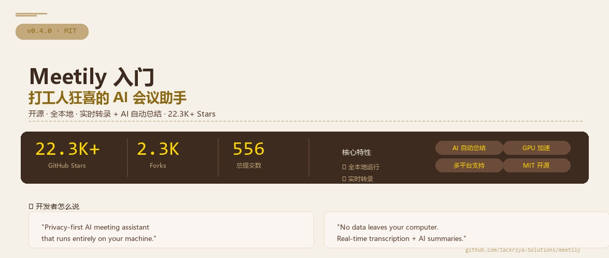

你回想一下，每次开完会你都得干什么？翻录音、找重点、写纪要、列待办……一个小时的会，光整理笔记就能再搭进去半小时。更别提那些敏感会议——方案讨论、客户沟通、薪资谈判——你根本不敢把录音扔到网上的 AI 工具里。说白了，市面上缺一个既能记又能保密的开会助手。
这就是 Meetily 要做的事。一个开源、全本地运行的 AI 会议助手，你开会的时候它自动录、自动转文字、自动总结，而且所有数据都留在你电脑上，一根毛都不会上传到云端。
⭐这玩意儿为什么火成这样？
22.3K Stars、2.3K Forks、556 次提交——一个做会议记录的工具能火成这样，肯定不是没道理的。你品品这几组数据，就知道这个痛点有多痛了：
💰数据泄露平均成本 $440 万
IBM 2024 年报告，每次数据泄露平均损失 440 万美元。你把会议录音传到云端，就等于把公司机密交到别人手上。
⚖️GDPR 罚款累计 €58.8 亿
到 2025 年，欧盟的隐私罚款已经到这个数字了。公司用第三方会议工具录的内容，一旦出事，罚款能让你肉疼好几年。
🔇光加州就 400+ 起非法录音诉讼
今年仅加州一州，就发生了超过 400 起非法录音案件。你用的那些云端会议录音工具，到底怎么处理你的数据，你真的清楚吗？
你看，隐私和数据安全已经不只是技术问题，它变成法律问题、财务问题了。而 Meetily 的解决方案简单粗暴——所有事情都在你电脑上做，数据根本不需要出你家门。
01一句话说清楚 Meetily 是什么
官方定位是"Privacy-First AI Meeting Assistant"。翻译成人话：
Meetily = 本地录音 + Whisper 实时转文字 + AI 自动总结 = 你开完会，纪要已经写好了
说白了，它就是一个装在电脑上的桌面应用。你开会的时候，它同时录你的麦克风和系统声音，一边录一边把语音转成文字，等会开完了，它还能把全文喂给 AI 帮你总结重点、列待办事项。
🔹不是云服务
不需要注册账号、不需要上传文件。下载安装，打开就能用。
🔹不是简单的录音机
它实时转文字、智能降噪、还能自动总结。不是录完就完事了。
🔹不挑大模型
AI 总结可以用 Ollama 全本地跑，也可以用 Claude、Groq，甚至你自己搭的 OpenAI 兼容接口。
02它到底能干什么？
咱们一个个说：
🎤实时转录
开会时实时显示字幕，谁说了什么一目了然。支持两种模型：Whisper（经典款，稳定可靠）和 Parakeet（NVIDIA 出品，速度是 Whisper 的 4 倍）。
🧠AI 自动总结
会开完，把完整转录文本发给 AI，自动生成会议总结、关键决策、待办事项。你可以选 Ollama 全本地跑，隐私最安全；也可以用 Claude、Groq、OpenRouter，效果更好；甚至是你自己搭的 OpenAI 兼容接口。
🎛️专业音频处理
同时录麦克风和系统声音，智能降噪、防止爆音。你开会用 Zoom 还是腾讯会议都没关系，它自己搞定混音。
📥导入已有录音
Beta 功能。之前录的会议音频也能导进去转录，或者换一种模型重新转录。比如你之前用 Whisper 转的，试试 Parakeet 可能更快。
⚡GPU 加速
苹果芯片用 Metal + CoreML，NVIDIA 显卡用 CUDA，AMD/Intel 用 Vulkan。一句话：你的显卡越好，转录越快。
03技术架构——Rust + Tauri 的优雅组合
Meetily 的技术选型很有意思，值得开发者重点关注：
🦀 后端：Rust（46.2%）
Rust 负责音频采集、Whisper 模型推理、AI 请求调度等核心逻辑。选 Rust 而不是 Python 原因很简单——性能好、打包体积小、跨平台方便。音频处理这种对延迟敏感的事，Rust 是天然的选择。
⚛️ 前端：Next.js / TypeScript（29.7%）
UI 层用 Next.js 构建，通过 Tauri 的 WebView 渲染。TypeScript 保障前端代码质量，Next.js 的 SSR 虽然桌面端用不上，但开发体验和组件生态是实打实的优势。
📦 框架：Tauri
Tauri 是 Electron 的替代者。同一个应用，Tauri 打包出来可能只有几 MB，Electron 随随便便上百 MB。而且 Tauri 的 Rust 后端能直接调用系统 API，做音频处理比 Node.js 后端顺手太多。
🗣️ 转录引擎：Whisper + Parakeet
Whisper（通过 whisper.cpp）是标配，稳定可靠。Parakeet 是 NVIDIA 的模型，经过 ONNX 转换后能在本地跑，速度是 Whisper 的 4 倍。两个模型都完全本地运行。
💡 开发者视角
如果你也想做一个本地 AI 桌面应用，Meetily 的技术栈是很好的参考：Tauri 做壳、Rust 做重活、Next.js 做 UI、Whisper/Ollama 做 AI。这个组合能让你在"开发效率"和"运行性能"之间找到不错的平衡点。
04怎么装？三句话说完
Meetily 安装极其简单，下载即用：
🪟Windows 用户
去 GitHub Releases 下载 x64-setup.exe，双击安装，一路下一步。就这么简单。最新版 v0.4.0，22.3K Stars 的项目，下载量已经不小了。
🍎macOS 用户
下载 meetily_0.4.0_aarch64.dmg，打开拖到 Applications 文件夹。注意：目前只支持 Apple Silicon（M1/M2/M3/M4），Intel Mac 可能需要自己编译。
🐧Linux 用户
需要从源码编译。项目提供了详细的构建文档：docs/building_in_linux.md。大致流程是：pnpm install && ./build-gpu.sh。
⚠️ 新手注意
第一次启动时，Meetily 会自动下载 Whisper 模型（几百 MB），确保网络畅通。如果要用 Ollama 做本地 AI 总结，需要先装 Ollama 并拉一个模型（比如 ollama pull llama3）。GPU 加速在构建时自动启用，不需要额外配置。
05免费版够用吗？Pro 多了什么？
项目承诺"Community Edition 永远免费开源"。那一句话已经足够让人放心了。但团队也提供了一个 Pro 版本，咱们看看差异：
| 功能 | 免费版 | Pro |
|---|
| 实时转录 | ✅ | ✅ 更精准 |
| AI 总结 | ✅ 基础 | ✅ 自定义模板 |
| 导出格式 | 标准 | PDF/DOCX/Markdown |
| 自动检测会议 | ❌ | ✅ |
| 说话人识别 | ❌ | 规划中 |
| 团队部署 | 单人 | 自托管团队版 |
| 价格 | 免费 | 付费 |
说实话，对大多数个人用户来说，免费版已经够用了。唯一的痛点是"说话人识别"还没上，但 Pro 版也还在规划中。如果你只是自己开会记笔记，免费版完全够用。
06谁最需要 Meetily？
👔每天开会的打工人
产品经理、项目经理、创业者——一天 5 个会起步的那种。每场会结束后自动收到纪要，不需要自己记笔记，省下来的时间摸鱼也好干正事也好，反正不亏。
🔒隐私敏感行业
法务、财务、HR、医疗——这些行业的会议内容绝对不能外传。本地运行就是最大的安全感。
👨💻开发者/技术团队
想研究 Tauri + Rust + Whisper 技术栈的开发者，或者想自建会议记录系统的小团队。代码开源、MIT 协议，随便改。
🏢合规要求严格的企业
GDPR、个人信息保护法——合规不是闹着玩的。数据不出本地，审计合规一条龙。
Q1：Meetily 最核心的卖点是什么？
👆 点击每个选项查看对错
Q2：Meetily 的 AI 总结可以用哪些模型？
👆 点击每个选项查看对错
📌 这节课你学到了什么
✅ Meetily 是什么——一个全本地运行的开源 AI 会议助手
✅ 解决的核心痛点——隐私安全 + 自动纪要，22.3K Stars 验证了需求
✅ 五大核心功能——实时转录、AI 总结、专业音频、导入录音、GPU 加速
✅ 技术架构——Tauri + Rust + Next.js + Whisper/Ollama
✅ 安装方式——Windows 下载 exe / macOS 下载 dmg / Linux 源码编译
✅ 免费版 vs Pro——免费版个人完全够用，Pro 更适合团队
📒
第 1 课 · 笔记完成
你已经搞懂了 Meetily 是什么、能干什么、怎么装。
下一步就是下载体验——开一次会，感受一下"开完会纪要已经写好了"是什么体验。
📖 参考：github.com/Zackriya-Solutions/meetily — README、Official Docs
📊 数据来源：GitHub 2026.07 — Meetily 以 22.3K+ Stars 成为 AI 会议工具头部项目